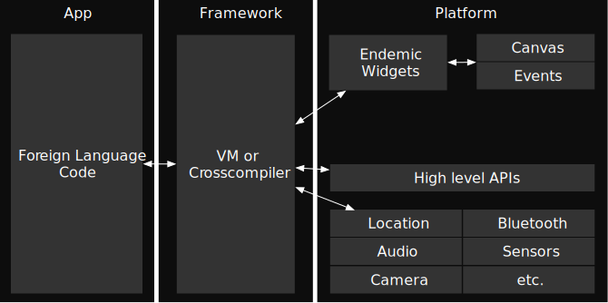

Technik und Architektur
Essence
Stakeholders

Opportunity

Requirements

System

Work

Team

Way of Working


Betriebssysteme
Anteile an Webseitenaufrufen
Stammbaum der führenden OS
Entwicklungsmöglichkeiten
Klassische Unterteilung
- Web Apps
- Native Apps
- Hybrid Apps
Web Apps
The full Safari engine is inside of iPhone. And so, you can write amazing Web 2.0 and Ajax apps that look exactly and behave exactly like apps on the iPhone. And these apps can integrate perfectly with iPhone services. […] And guess what? There’s no SDK that you need!
Native Apps
With the SDK in iPhone 2.0 we’re opening the same native APIs and tools we use internally.
Hybrid Apps
Alternative Taxonomie Hauptkategorien
Alternative Taxonomie Komplett
(Progressive) Web Apps
Endemic Apps
Hybrid Web Apps
Hybrid Bridged Apps
System Language Apps
Foreign Language Apps (MAUI)

Foreign Language Apps (Flutter)
Systembeschreibung
Überblick
Festlegung von Rahmendaten auf Basis der Anforderungen
- Endgeräte
- Betriebssystemversionen
- Bibliotheken und Software
Systembeschreibung (Beispiel)
Interne und externe Schnittstellen
Überblick
- Beschreibung von existierenden und geplanten Schnittstellen
- Datenaustauschformat (z.B. XML, JSON, Plaintext, Binärformat)
- Übertragungsweg (z.B. TCP/UDP, Bluetooth, ZigBee, OneWire, TwoWire, …)
- Beschreibung der API
Interne und externe Schnittstellen (Beispiel)
Bausteinsicht
Übersicht
- Modellierung der Daten
- UML-Klassendiagramm
Bausteinsicht (Beispiel)
Ablaufdynamik
Übersicht
- Detailliertere Modelle
- Näher an Umsetzung
Ablaufdynamik (Beispiel)
Auswahl von Softwarearchitekturen
Wichtige Ziele
- Testbarkeit
- Trennung von applikationsunabhängiger und -spezifischer Logik
- Lose gekoppeltes UI
- Unabhängigkeit von externen Frameworks
- Unabhängigkeit von externen Datenquellen und -senken
Chronologischer Überblick
- BCE (Boundary-Control-Entity) Boundary-Konzept ermöglicht Unabhängigkeit
- DDD (Domain Driven Design) Schichtung in UI, Application, Domain und Infrastructure
- Hexagonal Architecture (aka Ports and Adapters) Zentraler Applikationskern, UI und Infrastructure extern
- Onion Architecture Verbindet DDD und Hexagonal Architecture
- Clean Architecture Verbindet BCE und Onion Architecture
Bewertung
- Hexagonal Architecture ist der erste Ansatz, der alle Ziele leichtgewichtig und verständlich erreicht
- Folgende Vorschläge wie Onion, Clean, Explicit, … Architecture lassen sich als Erweiterungen von Hexagonal Architecture sehen
- Hexagonal Architecture damit stabiles Fundament
Aufbau
Übersicht
Allow an application to equally be driven by users, programs, automated test or batch scripts, and to be developed and tested in isolation from its eventual run-time devices and databases.
Alistair Cockburn
Vergleich mit Onion Architecture
Vergleich mit Clean Architecture
Vergleich mit Explicit Architecture
Minimalbeispiel
Hintergrund

Core
Infrastructure
User Interface
Core
Infrastructure
User Interface
Inkrementelle Entwicklung
Horizontale Inkremente
Vertikale Inkremente
- Entwicklung Anwendungsfall für Anwendungsfall
- Gute Testbarkeit
Social Media Posts